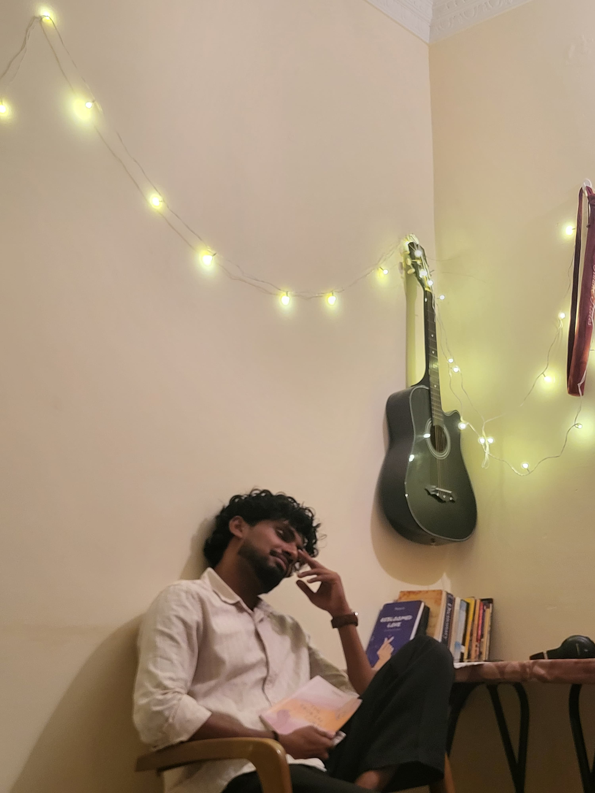

AUTHOR • STORYTELLER
Welcome to my official website. Explore my books and discover stories that live beyond the final chapter.
Explore My Books
I'm Tharun K, an independent author passionate about writing stories that explore love, heartbreak, hope, and healing. Every book I write is created with the hope that readers will find a part of themselves within its pages. Whether it's a story of love that blooms or one that breaks, I believe every emotion deserves to be told honestly.